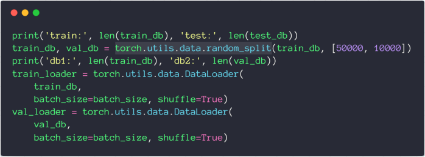
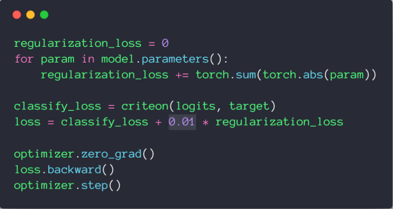
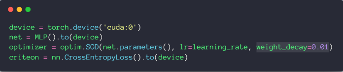
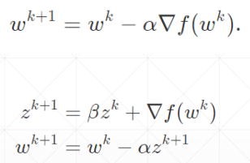
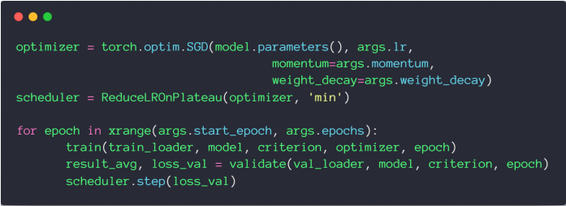
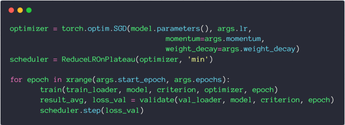
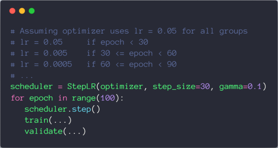
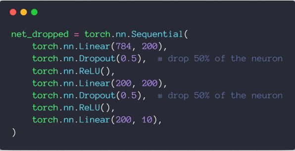
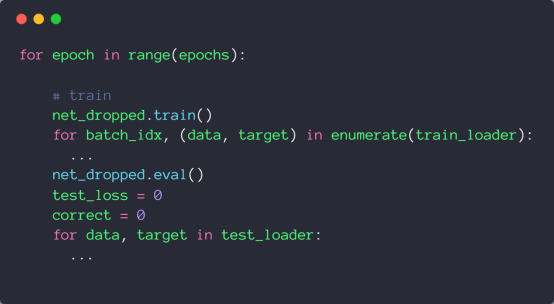

# 过拟合问题
# 欠拟合
当 train acc. is bad 并且 test acc. is bad as well 可以认为是欠拟合，但现在神经网络的学习能力太强了，所以这种问题不常见
# 过拟合
当 train loss and acc. is much better 但是 test acc. is worse 就是过拟合，也就是泛化能力 Generalization Performance 不够，所以目前的主要问题就是如何缓解过拟合问题
# 训练 / 验证 / 测试集的划分
对于测试集，我们不能做任何事情，所以通常来说将训练集划分为训练集和验证集

# weight_decay
可以用来尽可能减少参数的值
L1-regularization

L2-regularization

在 pytorch 中，可以方便的通过 weight_decay 设置 L2-regularization
# 动量 momentum


注意：Adam 中没有 momentum 参数，因为 Adam 已经内部包含了 momentum 的优化
# 学习率衰减
# 使用 ReduceLROnPlateau
当 Loss 平滑时，自动衰减学习率

# 使用 StepLR
达到迭代次数后进行衰减

# Dropout
pytorch 中的 torch.nn.Dropout(p=dropout_prob) 值为 1 时表示全部失活
tensorflow 中的 tf.nn.dropout(keep_prob) 值为 1 时表示全部保持

注意，当添加了 Dropout 时，需要在训练集和测试集之间用 net.eval() 进行切换。因为网络用于测试集时不用 Dropout
